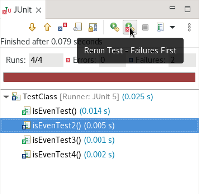
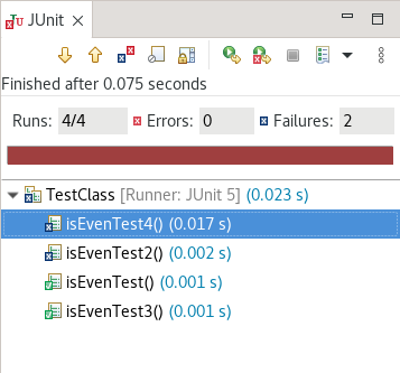
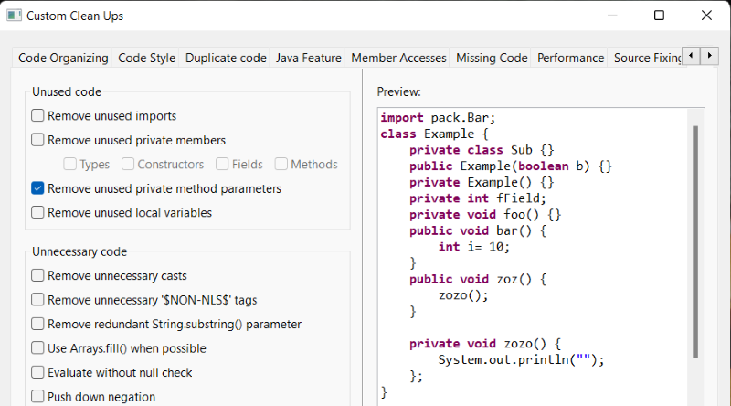
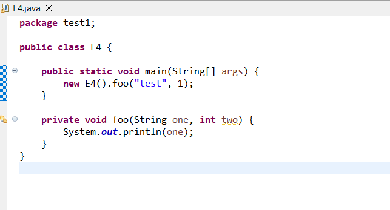
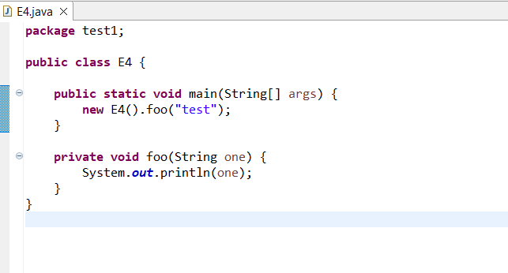
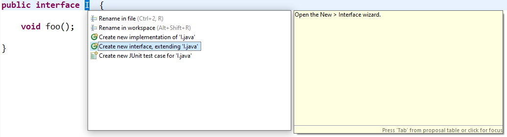
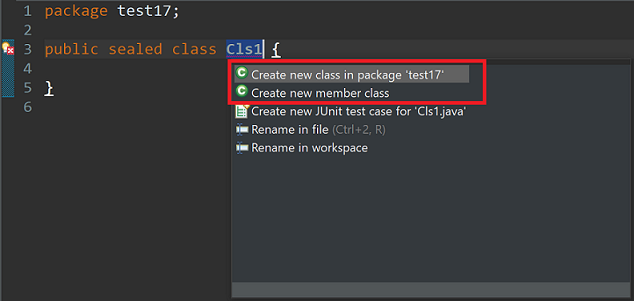
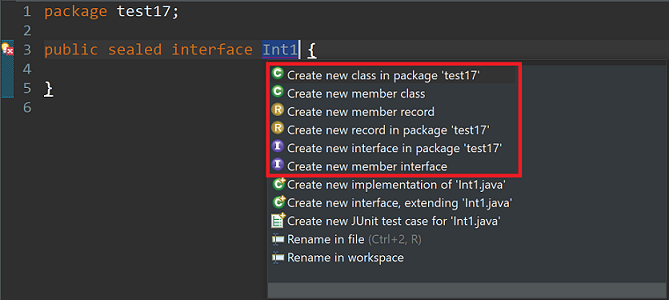

Java™ 18 Support
The release notably includes the following Java 18 features:
JEP 420: Pattern Matching for switch (Second Preview).
JEP 413: Code Snippets in Java API Documentation.
Please note that preview option should be on for preview language features. For an informal introduction of the support, please refer to Java 18 Examples wiki.
JUnit
To run, click on the Rerun Test - Failures First button in the JUnit view.

After pressing the button:

Java Editor
stream.filter(MyClass::foo)
To apply the cleanup, select the Remove unused private method parameters checkbox on the Unnecessary Code tab in your cleanup profile:

With the cleanup, the following code:

changes to:

To remove a single parameter, a quick-assist has been added that can be activated with CTRL+1 with the cursor located anywhere on the parameter.

These quick fixes have been added to fix the error :
Sealed class or interface lacks the permits clause and no class or interface from the same compilation unit declares Cls1 as its direct superclass or superinterface
As shown below, two new quick fixes have been added to create sub-type for a sealed super class.

As shown below, six new quick fixes have been added to create sub-type for a sealed super interface.

Debug
Now, the console will underline type names and line numbers and clicking on links will jump to the corresponding source code. If the type name is not unique, default Select type dialog will appear to allow selection of the right type.